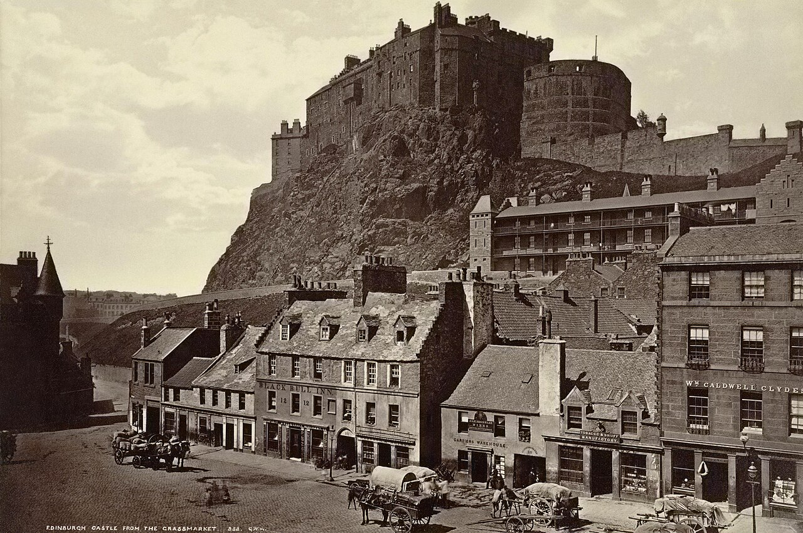
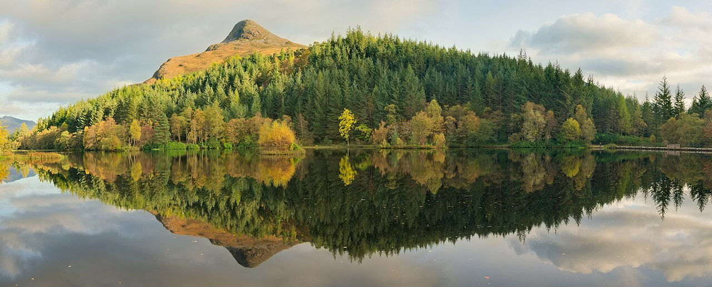
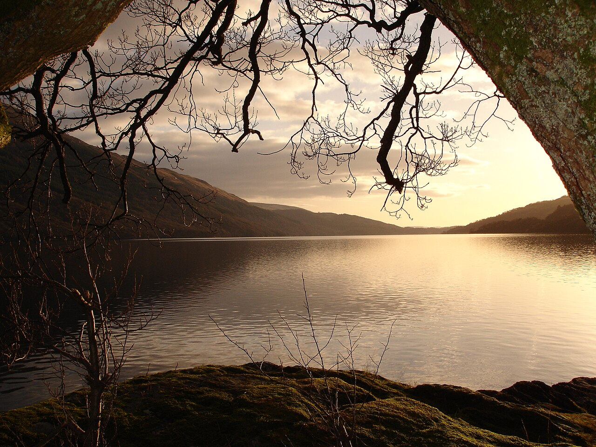
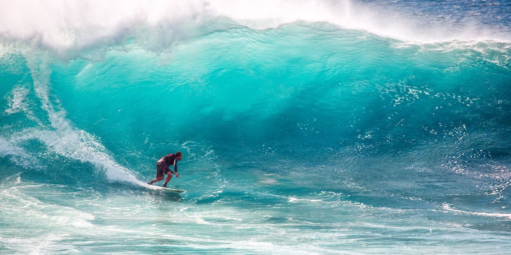
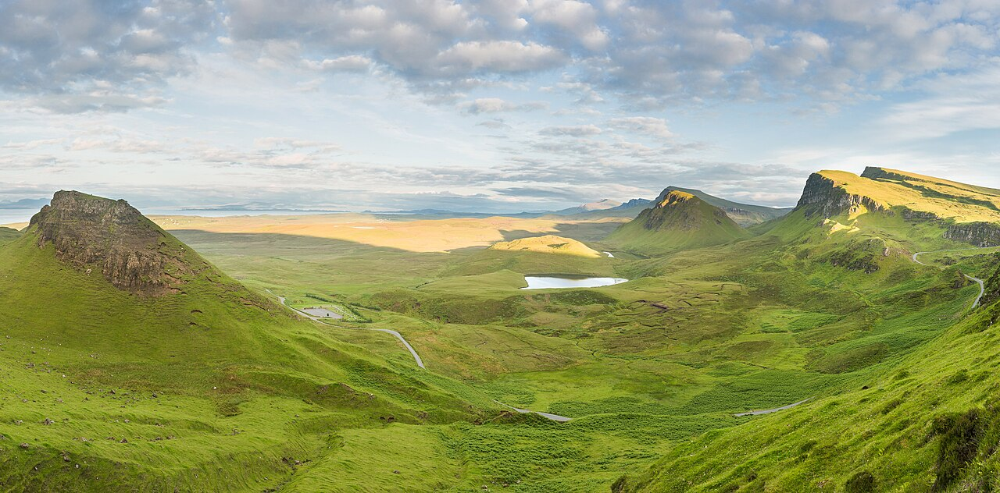
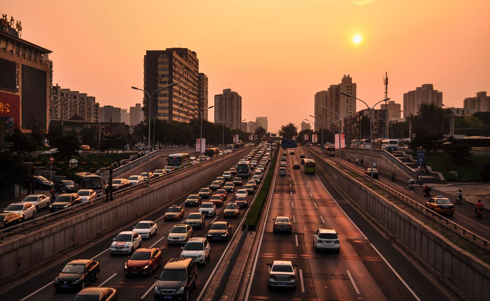

Day 1
Edinburgh arrival
Old Town / Stockbridge
- Check into a central guesthouse or apartment.
- Walk the Royal Mile and watch sunset from Calton Hill.
- Keep dinner easy and local with a relaxed final evening.
7-day couple getaway
A relaxed route through Edinburgh, Loch Lomond, the Highlands, and the west coast—perfect for scenic drives, gentle sightseeing, and a little wave time.

Highland state of mindDay-by-day plan

Old Town / Stockbridge
North Berwick / Dunbar

Luss / Balloch

Highlands

West coast beach

Skye or Arisaig

Stirling / Firth of Forth
Budget snapshot
| Category | Estimated daily cost |
|---|---|
| Accommodation | $180–$260 |
| Food | $80–$120 |
| Activities | $60–$120 |
| Transport | $40–$80 |
| Total | $360–$500/day |
Postcard moments
Travel tips
Choose B&Bs or guesthouses in smaller towns to keep costs down without sacrificing comfort.
West coast conditions change quickly. Keep the surf day flexible and let the forecast guide your plan.
Scotland rewards slower driving—leave room for scenic stops and photogenic detours.
Mix one major activity with free beaches, hikes, and viewpoints to stay within budget.